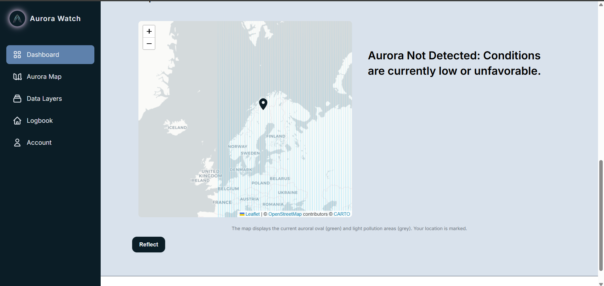
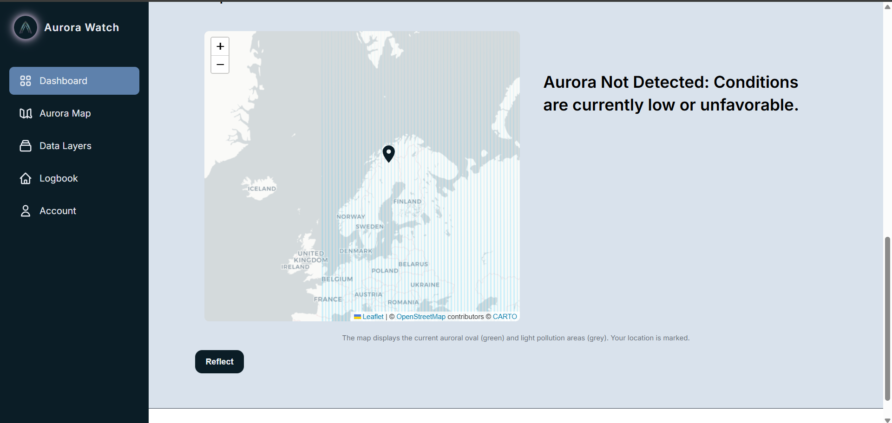

Project: Aurora Watch - A Real-time Celestial Prediction Platform
The Problem: Auroras are one of nature’s most stunning displays, but their unpredictable nature makes them difficult to observe. The key challenge is that forecasting them requires real-time data from sources like solar winds and atmospheric conditions. I wanted to build a reliable and accessible tool that could cut through that complexity and provide accurate, real-time predictions for enthusiasts and researchers.
My Solution & Technologies: I designed and built a full-stack application using the MERN (MongoDB, Express, React, Node.js) stack. I developed a robust backend with Node.js to connect to and process real-time data from various weather and satellite APIs. This allowed me to create a predictive algorithm that accurately calculates the likelihood and location of an aurora. The frontend, built with React, provided a user-friendly interface that visualized the forecast data and also included a real-time satellite view, giving users a comprehensive look at current celestial conditions.
The Impact: The final application successfully demonstrated the power of full-stack development and real-time data analysis to solve a complex, data-heavy problem. By making aurora forecasts more accessible and visually intuitive in any location, it served as a valuable tool for the astronomical community. It also solidified my understanding of how to build robust, comprehensive platforms, which is a crucial skill for tackling a wide range of scientific and security-related challenges.
 

Project: EcoRoute - A Smart Sustainability Platform
The Problem: I wanted to solve a problem that's personal to everyone: the environmental impact of daily travel. Most people want to be more sustainable, but the carbon footprint of their journeys is an abstract, invisible cost. My goal was to make that impact tangible. I set out to build a platform that transforms a simple trip into data, allowing users to see their carbon emissions and make informed, climate-conscious choices.
My Solution & Technologies: To solve this, I designed and built a full-stack web application using the **MERN (MongoDB, Express, React, Node.js) stack**. This enabled me to create a robust and dynamic platform with a strong backend. I developed a **REST API** to process environmental and transport data, which allowed the application to accurately calculate CO₂ emissions for different vehicles and routes. The **MongoDB** database ensured efficient storage and retrieval of user data, while **React** provided a user-friendly interface that made complex data easy to understand.
The Impact: The final application successfully provided users with real-time, data-driven insights, empowering them to make informed decisions about their travel. By visualizing the environmental cost of different routes, the platform transformed an abstract concept into tangible information. The application went a step further by suggesting the most carbon-neutral transportation modes, directly encouraging more sustainable choices. The project also served as a practical foundation in secure software development and data integrity, which are core skills for building robust, user-focused applications.